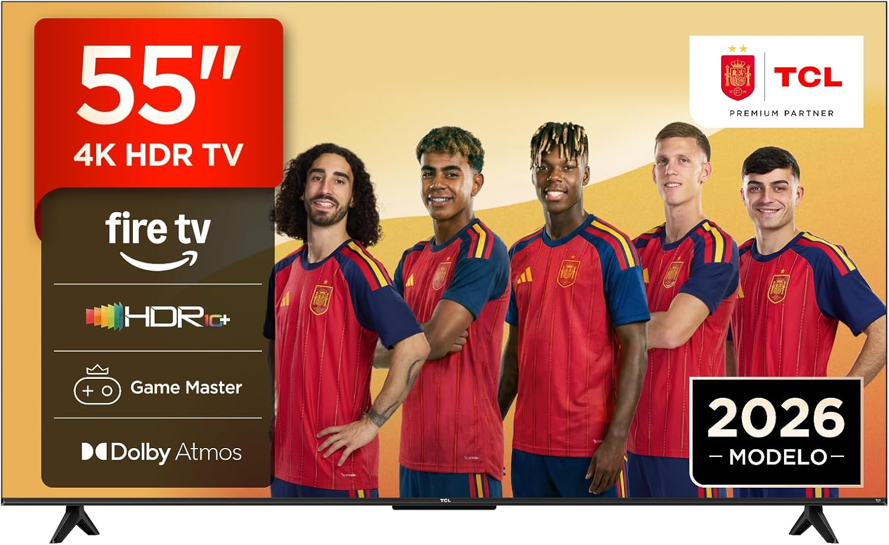
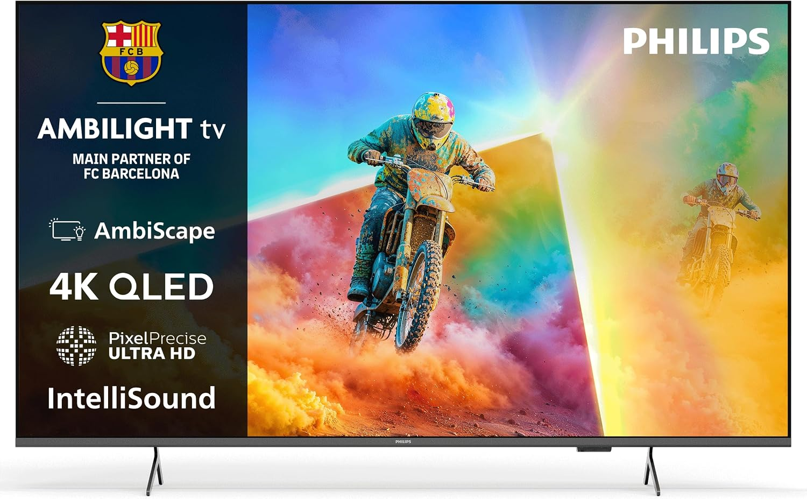
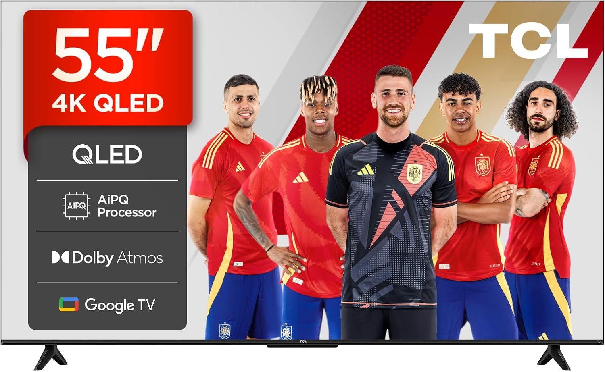
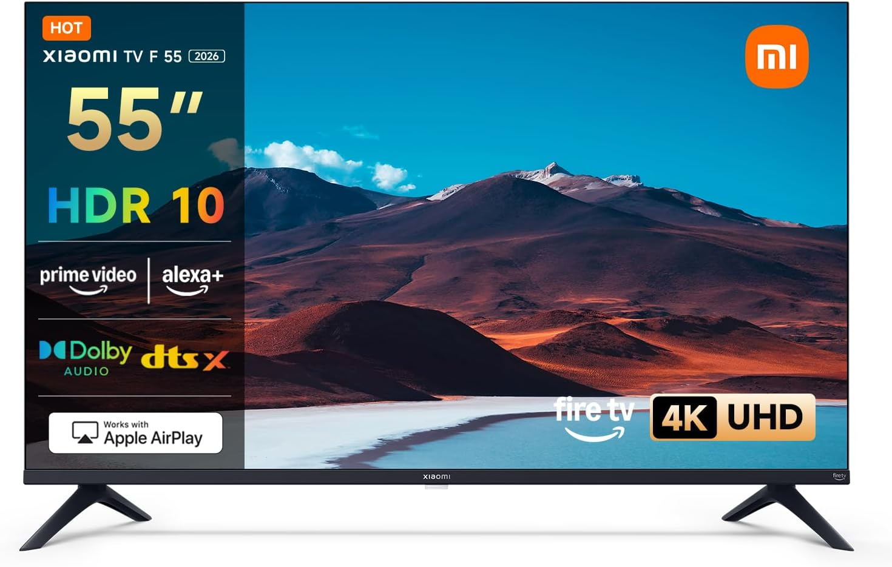
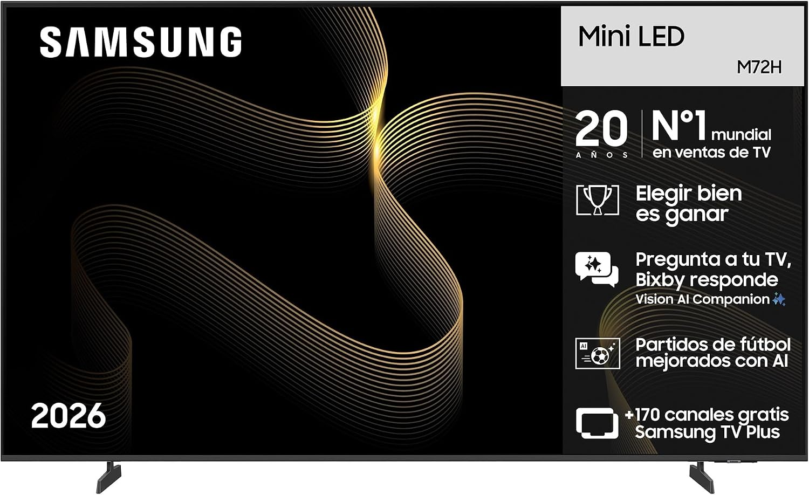
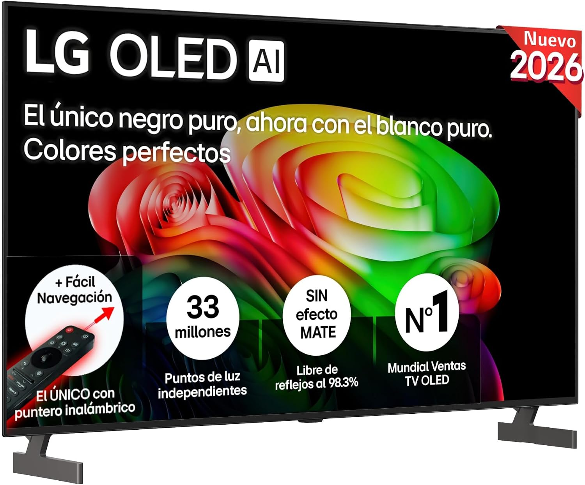

Televisores 4K: comparativa por tamaño, panel y sistema
Por el equipo de Casa y Comparativa · Precios, stock y plazos del 15 de noviembre de 2026, hacia la 1:45 (hora de Madrid). Esta página sirve todo el año, no solo en Navidad.
Hemos podido verificar siete televisores 4K, en stock en Amazon.es como artículo nuevo, vendidos y enviados por Amazon. Van de un 43 pulgadas a varios de 55, y de 299,00 € a 899,00 €. No declaramos que uno sea «el mejor»: abajo están los criterios, y cada ficha indica para qué uso encaja mejor según esos datos.
Aviso: En calidad de Afiliado de Amazon, obtenemos ingresos por las compras adscritas que cumplen los requisitos aplicables. Los precios y los plazos son los de esta consulta. El precio final y la fecha de entrega son los que marque la tienda al comprar. En dos modelos no hemos leído una fecha de entrega concreta, aunque figuraban en stock.
Cómo los comparamos
- Tamaño: pulgadas declaradas en la ficha.
- Resolución: en esta tanda, todos son 4K.
- Tecnología del panel: LED, QLED, Nano UHD, Mini LED u OLED, según la ficha. No medimos brillo ni reflejos por nuestra cuenta.
- Sistema operativo: el que declara cada ficha (Fire TV, Google TV, Titan OS, webOS u otro de la marca).
- Conectividad: HDMI, USB, Wi-Fi, Ethernet o Bluetooth, cuando aparecen en la ficha.
- Relación calidad-precio: el precio consultado frente al tamaño, al tipo de panel y al sistema. No hay un único ganador.
También anotamos la frecuencia de la tabla (60 o 120 Hz) y el recuento de opiniones, sin convertir las valoraciones en una prueba nuestra.
| Modelo | Tamaño | Panel | Sistema | Hz (tabla) | Precio (15 nov) |
|---|
| TCL 55V6D | 55" | LED | Fire TV | 60 | 299,00 € |
|---|
| Philips 43PQS8501 | 43" | QLED | Titan OS | 60 | 333,00 € |
|---|
| TCL 55T69C | 55" | QLED | Google TV | 60 | 345,00 € |
|---|
| Xiaomi TV F 55 (2025) | 55" | LED | Fire OS 8 | 60 | 349,00 € |
|---|
| LG 55NU800B6LA | 55" | Nano UHD | webOS | 60 | 380,99 € |
|---|
| Samsung Mini LED M72H | 55" en el título; 50" en la tabla | Mini LED | Sistema Samsung, según la ficha | 60 | 399,00 € |
|---|
| LG OLED55B65LA | 55" (un texto de la ficha habla de 65") | OLED | webOS 26 | 120 | 899,00 € |
|---|

TCL 55V6D, 55", LED 4K, Fire TV
Para quien busca un 55 pulgadas 4K con Fire TV y Alexa, a un precio de entrada en esta comparativa.
Panel LED 4K, 60 Hz según la tabla. La ficha indica Fire TV con Alexa, HDR10+, Dolby Vision y Dolby Atmos, AirPlay 2 y Game Master con HDMI 2.1, ALLM y VRR. También habla de un panel HVA y de la tecnología MEMC para reducir el desenfoque; no lo hemos medido. En la caja, según la ficha: cable de alimentación, mando y soporte. Conectividad declarada: Bluetooth, Ethernet, HDMI, USB y Wi-Fi. Lo vende y envía Amazon. Entrega anunciada el jueves 19 de noviembre. Valoraciones: 4,3 sobre 5, a partir de 126 opiniones.
299,00 €Amazon.es · vendido y enviado por Amazon · entrega anunciada el jueves 19 de noviembre · en stock · consulta del 15 de noviembre de 2026, 1:45 (hora de Madrid)
Ver en Amazon

Philips 43PQS8501/12, 43", QLED 4K Ambilight
El único 43 pulgadas de esta tanda. Encaja si el salón es más pequeño y te interesa la luz Ambilight, que la ficha describe como LEDs traseros que reaccionan a la imagen.
QLED 4K, 60 Hz en la tabla. Sistema Titan OS, según el listado, con acceso a apps de streaming. También declara Dolby Atmos, el procesador P5 con IA y un sensor de luz ambiental. En la caja: cable de alimentación, mando, pila del mando, manual y soporte. Conectividad: Bluetooth, Ethernet, HDMI y Wi-Fi. Lo vende y envía Amazon. Estaba en stock el 15 de noviembre, pero no hemos leído una fecha de entrega concreta en la ficha: conviene comprobarla al comprar. Valoraciones: 4,6 sobre 5, a partir de solo 8 opiniones; el recuento es muy bajo.
333,00 €Amazon.es · vendido y enviado por Amazon · en stock · fecha de entrega no leída en la ficha · consulta del 15 de noviembre de 2026, 1:45 (hora de Madrid)
Ver en Amazon

TCL 55T69C, 55", QLED 4K, Google TV
Para quien prefiere Google TV y un panel QLED, con más opiniones que el V6D de la misma marca.
QLED 4K, 60 Hz según la tabla. La ficha indica Google TV, Dolby Atmos, Direct LED, panel HVA, procesador AiPQ y compatibilidad con HDR10, HLG, HDR10+ y Dolby Vision. En la caja: cable de alimentación, mando y soporte. Conectividad: Bluetooth, Ethernet, HDMI, USB y Wi-Fi. Lo vende y envía Amazon. Entrega anunciada el jueves 19 de noviembre. Valoraciones: 4,2 sobre 5, a partir de 767 opiniones.
345,00 €Amazon.es · vendido y enviado por Amazon · entrega anunciada el jueves 19 de noviembre · en stock · consulta del 15 de noviembre de 2026, 1:45 (hora de Madrid)
Ver en Amazon

Xiaomi TV F 55 (2025), 55", LED 4K, Fire OS 8
Otro 55 pulgadas con Fire TV y Alexa, con muchas más opiniones que el TCL V6D. La fecha de entrega no aparece en el texto que hemos podido leer.
LED 4K, 60 Hz según la tabla. La ficha indica Fire OS 8, HDR10, MEMC, control por voz con Alexa, AirPlay y Miracast. En la caja: cable de alimentación, juego de tornillos, mando Bluetooth, manual y soporte. Conectividad: Bluetooth, Ethernet, HDMI, USB y Wi-Fi. Lo vende y envía Amazon. Estaba en stock el 15 de noviembre; no hemos leído una fecha de entrega concreta. Valoraciones: 4,3 sobre 5, a partir de 4.968 opiniones.
349,00 €Amazon.es · vendido y enviado por Amazon · en stock · fecha de entrega no leída en la ficha · consulta del 15 de noviembre de 2026, 1:45 (hora de Madrid)
Ver en Amazon

LG 55NU800B6LA, 55", Nano UHD 4K, webOS (modelo 2026)
Para quien quiere webOS y el anti-reflejos que la ficha cifra en un 94 %. El mando Magic Pointer, según la ficha, se adquiere por separado.
La tabla indica tecnología 4K UHD y 60 Hz. El listado habla de Nano 4K, HDR10, Dolby Digital Plus, procesador 4K α7 Gen9 y funciones de cloud gaming. No repetimos porcentajes de nitidez como un hecho nuestro. En la caja, según la ficha: mando, manual, pilas y tarjeta de garantía; el soporte no figura en esa lista, así que no lo damos por incluido. Conectividad declarada: Bluetooth, HDMI y Wi-Fi. Lo vende y envía Amazon. Entrega anunciada el sábado 21 de noviembre. Valoraciones: 4,2 sobre 5, a partir de 167 opiniones.
380,99 €Amazon.es · vendido y enviado por Amazon · entrega anunciada el sábado 21 de noviembre · en stock · consulta del 15 de noviembre de 2026, 1:45 (hora de Madrid)
Ver en Amazon

Samsung Mini LED M72H, 4K
Es el único Mini LED de esta tanda. Hay una contradicción de tamaño que no resolvemos: el título dice 55 pulgadas y la tabla, 50.
Mini LED 4K, 60 Hz según la tabla. El ancho declarado es 122,5 cm, más cercano a un 55 pulgadas que a un 50; aun así, no afirmamos un único tamaño. La ficha habla de Vision AI Companion, modo de fútbol con IA y Samsung TV Plus (más de 170 canales, según el listado). No aparece el nombre del sistema operativo en el texto que hemos leído; nos quedamos con lo que sí está escrito. En la caja: mando, cable de alimentación y manual. Conectividad: Bluetooth, Ethernet, HDMI, USB y Wi-Fi. Lo vende y envía Amazon. Entrega anunciada el viernes 20 de noviembre. Valoraciones: 4,4 sobre 5, a partir de 34 opiniones; el recuento es moderado.
399,00 €Amazon.es · vendido y enviado por Amazon · entrega anunciada el viernes 20 de noviembre · en stock · consulta del 15 de noviembre de 2026, 1:45 (hora de Madrid)
Ver en Amazon

LG OLED55B65LA, 55", OLED 4K, webOS 26
El modelo prémium de esta comparativa: panel OLED y 120 Hz, a 899,00 €. Un texto de la ficha habla de 65 pulgadas; el título, la tabla y el nombre del modelo dicen 55. Nos quedamos con 55 y lo dejamos avisado.
OLED 4K, 120 Hz según la tabla. El listado indica anti-reflejos Pro del 98,3 %, Dolby Vision, Dolby Atmos, procesador α8, webOS 26 con actualizaciones declaradas hasta 2030, 0,1 ms, VRR, NVIDIA G-Sync y AMD FreeSync Premium, y mando Magic Pointer incluido en este modelo. Las medidas de la tabla (142 × 83 × 17,2 cm) no encajan con un 55 pulgadas de salón; no las damos por buenas. En la caja: mando, manual, pilas y tarjeta de garantía. Conectividad declarada: HDMI, USB-C y Wi-Fi. Lo vende y envía Amazon. Entrega anunciada el jueves 19 de noviembre. Valoraciones: 4,8 sobre 5, a partir de solo 10 opiniones; el recuento es bajo.
899,00 €Amazon.es · vendido y enviado por Amazon · entrega anunciada el jueves 19 de noviembre · en stock · consulta del 15 de noviembre de 2026, 1:45 (hora de Madrid)
Ver en Amazon
También te puede interesar
En Navidad, estos televisores aparecen en las guías de regalos de 100 a 500 € y de regalos prémium, con enlace a esta comparativa para no repetir las fichas. Si buscas otros electrodomésticos de casa, están las páginas de robots aspiradores y de cafeteras, con los precios de aquellas consultas.